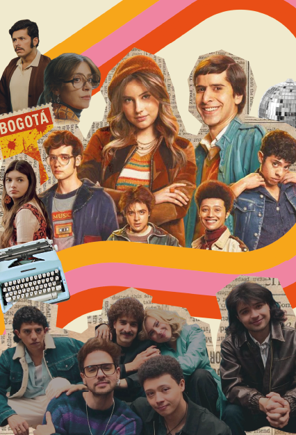

Más que entretenimiento
Otro aspecto que destaca de la serie es que, más allá de buscar entretener a sus espectadores, muestras múltiples críticas al sistema social y político de la época. Lejos de romantizar una vida perfecta y feliz, la narrativa se enfoca en mostrar la realidad sin idealizaciones, evidenciando sus contradicciones, las decisiones que marcan a los personajes y los constantes cambios que atraviesan. Además, la serie contextualiza momentos clave de la historia colombiana que no solo marcaron al país, sino también a miles de familias, generando transformaciones en las tradiciones. Aborda, por ejemplo, las luchas de las mujeres por demostrar su autonomía y hacer escuchar su voz, enfrentándose a una sociedad machista y violenta. Asimismo, retrata hechos relacionados con el accionar del M-19, evidenciando cómo, en su intento por demostrar poder, se vulneraba a personas inocentes, como ocurrió durante la Toma de la Embajada de la República Dominicana. También se muestra el proceso de aceptación de las personas con Síndrome de Down, quienes durante mucho tiempo fueron vistas como incapaces de enfrentarse al mundo. Por último, se hace referencia a la Toma del Palacio de Justicia, un episodio que aún permanece en la memoria colectiva del país por el profundo dolor que dejó, con numerosas familias afectadas por la pérdida de sus seres queridos.
Lo que nos deja
Gracias a todos estos temas, la serie permite tener una nueva visión y ser más conscientes de las realidades que vivimos día a día. Aborda la maternidad y el aborto, dejando claro que la decisión de ser madre es únicamente de la mujer, y resalta la importancia del autocuidado y los métodos anticonceptivos. También muestra el papel fundamental de las mujeres en la sociedad y la importancia de que puedan tomar decisiones por sí mismas y hacer escuchar su voz. Además, destaca la educación sexual, cuestionando los tabúes y la influencia que tiene la religión, presenta la diversidad sexual como algo natural, defendiendo que lo más importante es tener derecho a amar sin culpa ni miedo. Por último, hace una crítica a la forma en que la religión se ha usado para juzgar y discriminar, invitando a vivirla desde el respeto y la compasión.
